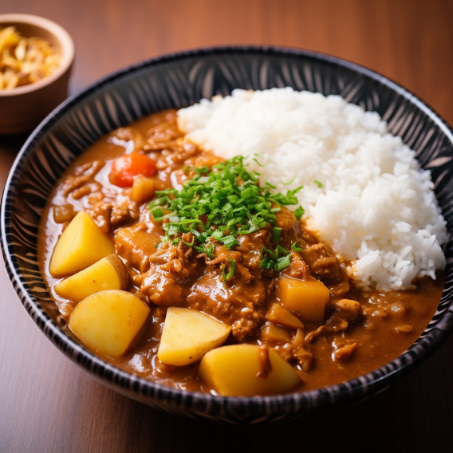
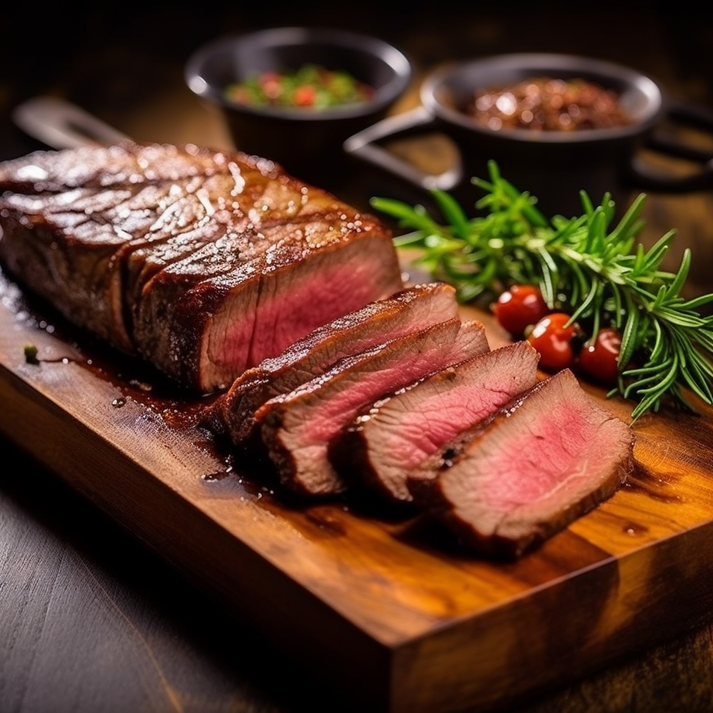
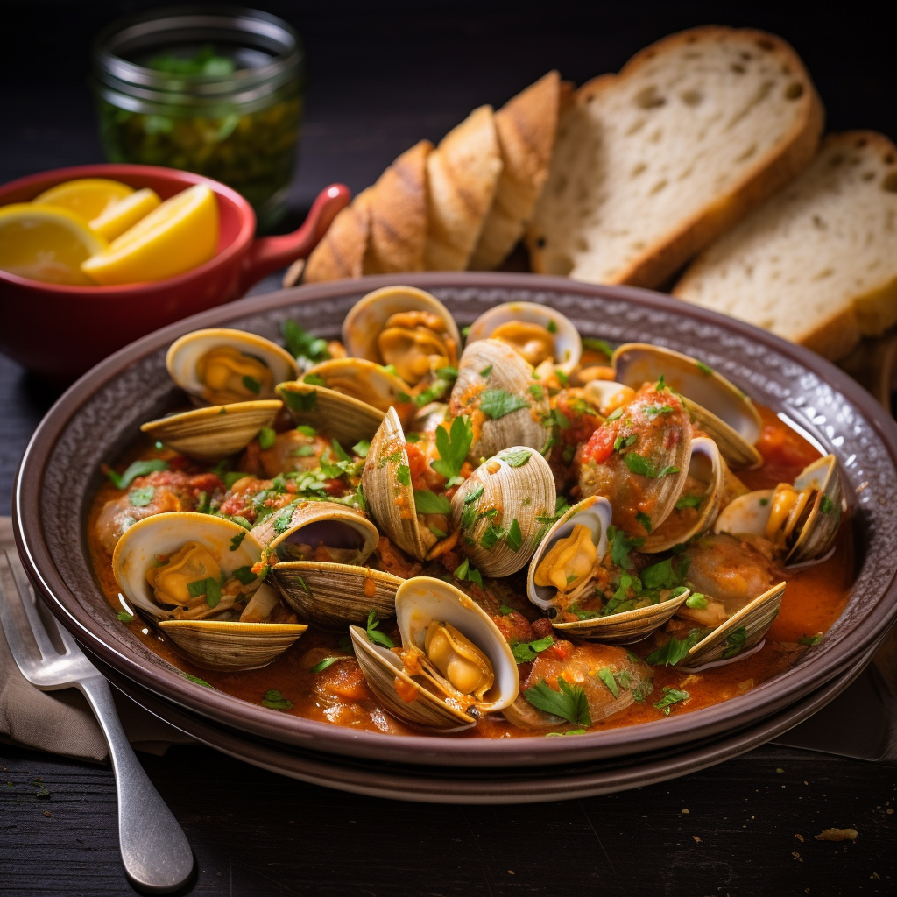
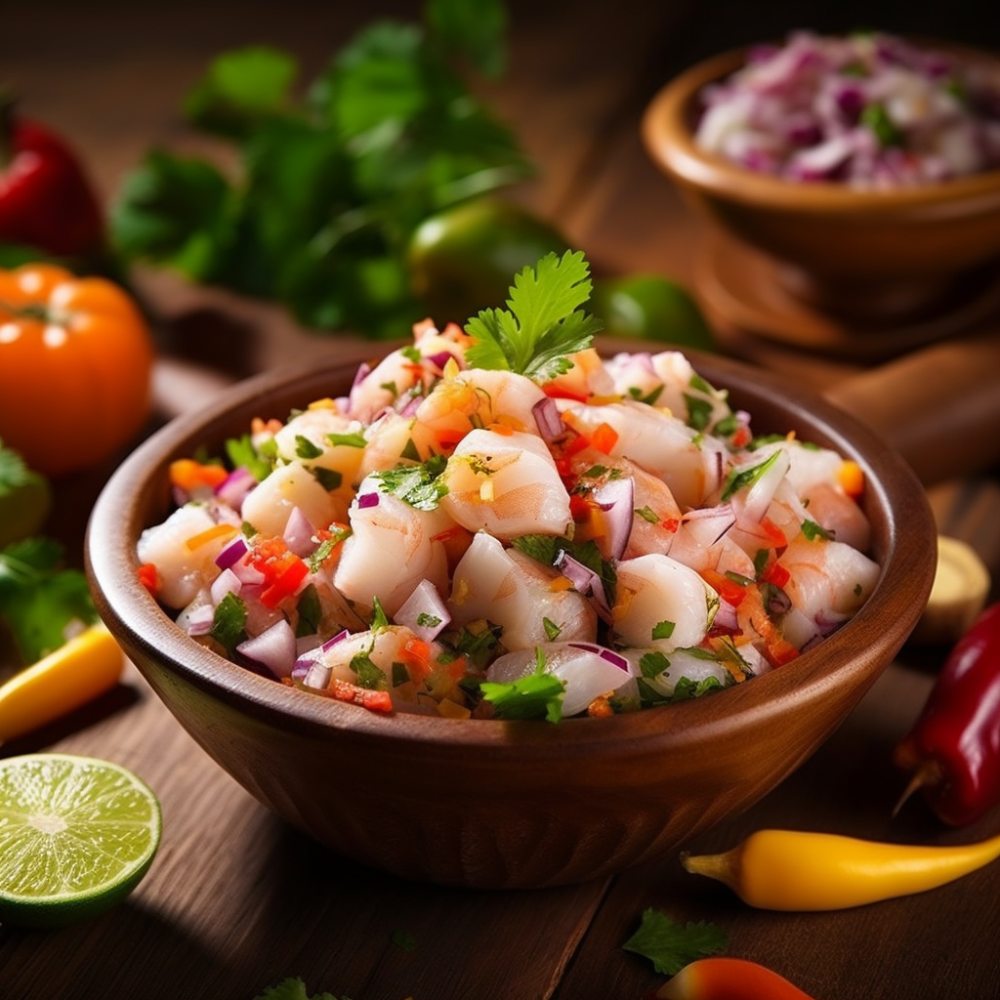
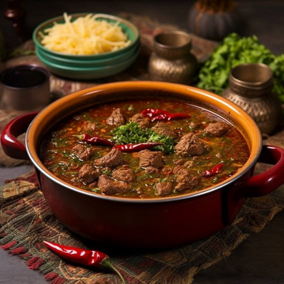
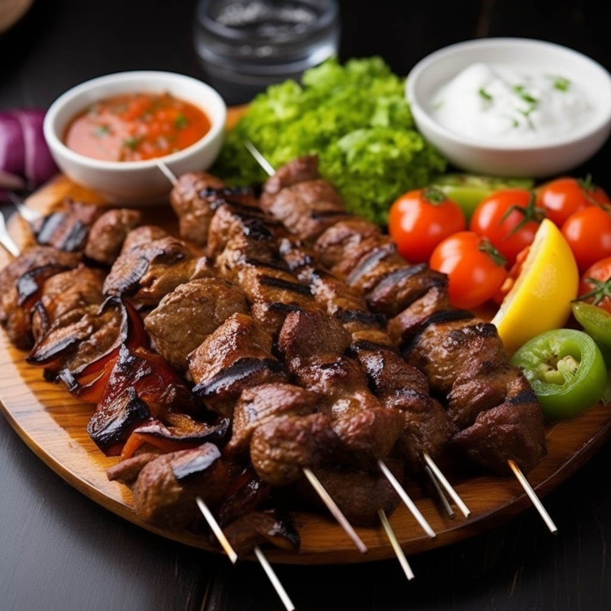
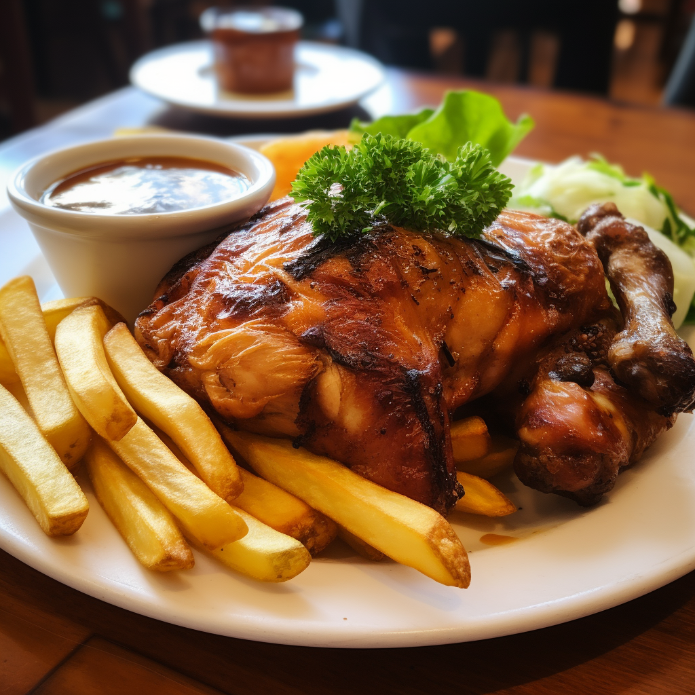

| No.1 Karē, Japan |
- Japanese curry roux (blocks or powder)
- Onions
- Carrots
- Potatoes
- Meat (beef, pork, or chicken)
- Water or broth
|
-
Cut the onions, carrots, and potatoes into bite-sized pieces.
-
In a large pot, sauté the meat and vegetables until lightly
browned.
-
Add enough water or broth to cover the ingredients in the pot.
-
Simmer on medium heat until the vegetables and meat are tender.
-
Add the Japanese curry roux blocks or powder to the pot and stir
until it thickens and
- Serve the Karē over steamed rice and enjoy!
|
 |
|
No.2 Picanha, Brazil
|
- Picanha(top sirloin cap)
- Rock salt
|
- Preheat the grill or barbecue to medium-high heat.
-
Season the picanha generously with rock salt on all sides.
- Skewer the picanha onto metal or wooden skewers.
-
Grill the picanha on each side for about 5-7 minutes, or until
the desired doneness is reached.
- Remove from the grill and let it rest for a few minutes.
-
Slice the picanha against the grain and serve with rice, farofa
(toasted cassava flour), and salads.
|
 |
|
No.3 Amêijoas à
Bulhão Pato, Portugal
|
- Fresh clams
- Garlic
- Olive oil
- White wine
- Fresh coriander
- Salt
- Pepper
|
-
Rinse the fresh clams thoroughly to remove any sand or debris.
-
In a large pan, sauté minced garlic in olive oil until fragrant.
-
Add the clams to the pan and pour in a generous amount of white
wine.
-
Cover the pan and cook over medium-high heat until the clams
open (about 5-7 minutes).
- Season with salt and pepper to taste.
-
Sprinkle fresh coriander over the clams and serve with crusty
bread to soak up the flavorful broth.
|

|
|
No.4 Tangbao, China
|
- Minced meat (pork or chicken)
- Ginger
- Green onions
- Soy sauce
- Sesame oil
- Dumpling wrappers
- Salt
- Pepper
|
- Finely chop ginger and green onions.
-
In a mixing bowl, combine the minced meat, chopped ginger, green
onions, soy sauce, and a few drops of sesame oil.
-
Take a dumpling wrapper and place a spoonful of the meat mixture
in the center.
-
Wet the edges of the wrapper and fold it in half, pressing to
seal the edges.
-
Pleat the edges to create a circular shape, ensuring the filling
is securely enclosed.
-
Steam the Tangbao for about 10-12 minutes until fully cooked.
Serve with dipping sauce.
|
|
|
No.5 Guotie, China
|
- Minced meat (pork or chicken)
- Ginger
- Green onions
- Soy sauce
- Cabbage
- Dumpling wrappers
|
- Finely chop cabbage, ginger, and green onions
-
In a mixing bowl, combine the ground meat, chopped cabbage,
ginger, green onions, and soy sauce.
-
Take a dumpling wrapper and place a spoonful of the meat mixture
in the center.
-
Wet the edges of the wrapper and fold it in half, pressing to
seal the edges.
- Heat a pan with oil and place the Guotie in the pan.
-
Pan-fry until the bottom is golden and crispy. Then, add water
to the pan and cover to steam until fully cooked.
|
|
|
No.6 Phanaeng Curry,
Thailand
|
- Coconut milk
- Red curry paste
- Meat (chicken, beef, or pork)
- Thai eggplants
- Kaffir lime leaves
- Palm sugar
- Fish sauce
|
-
In a pot, heat a small amount of coconut milk until it begins to
separate.
- Add red curry paste and stir until fragrant.
- Add the meat and cook until it changes color.
-
Pour in the remaining coconut milk, and bring to a gentle boil.
-
Add Thai eggplants and kaffir lime leaves. Simmer until the meat
is tender.
-
Season with palm sugar and fish sauce to achieve the desired
sweetness and saltiness.
|
|
|
No.7 Ceviche mixto, Peru
|
- Fresh fish and seafood (shrimp, squid, scallops)
- Lime or lemon juice
- Onions
- Chili peppers
- Cilantro
- Salt
|
- Cut the fish and seafood into small pieces.
-
In a bowl, combine the fish and seafood with freshly squeezed
lime or lemon juice.
-
Add thinly sliced onions, chopped chili peppers, and chopped
cilantro.
- Season with salt to taste and mix well.
-
Let the ceviche marinate in the refrigerator for at least 15-20
minutes, or until the fish and seafood "cook" in the acidic
juice.
-
Serve the ceviche mixto with boiled corn-on-the-cob or boiled
sweet potatoes.
|

|
|
No.8 Ghormeh sabzi, Iran
|
- Fresh herbs (parsley, cilantro, leeks, fenugreek leaves)
- Red kidney beans
- Onions
- CLamb or beef
- Dried limes
- Turmeric
- Salt
|
-
Wash and finely chop the fresh herbs (parsley, cilantro, leeks,
and fenugreek leaves).
- In a pot, sauté chopped onions until golden.
- Add the chopped herbs and sauté for a few more minutes.
- Add the meat and brown it.
-
Pour in enough water to cover the ingredients and add dried
limes, turmeric, and salt.
-
Simmer until the meat is tender and the flavors meld together.
Serve with saffron-infused rice.
|
 |
|
No.9 Cağ kebabı, Turkey
|
- Lamb or mutton
- Onion and oinion juice
- Garlic
- Black pepper
- Regional spices
- Lavash bread
- Tomatoes
- Peppers
|
-
Marinate the lamb or mutton with a mixture of onion juice,
crushed garlic, black pepper, and regional spices.
- Thread the marinated meat onto long horizontal skewers.
-
Cook the meat over an open flame or charcoal grill, rotating the
skewers horizontally to ensure even cooking.
-
Once the meat is cooked and has a beautiful charred exterior,
remove it from the skewers.
-
Serve the Cağ kebabı on lavash bread, accompanied by sliced
onions, tomatoes, and peppers.
|

|
|
N0.10 Pollo a la brasa,
Peru
|
- Whole chicken
- Cumin
- Paprika
- Garlic
- Aji amarillo (Peruvian yellow chili pepper)
- Salt
- French fries
- Salad
|
-
In a blender, prepare a marinade by blending cumin, paprika,
garlic, aji amarillo, and salt with a little water.
-
Rub the marinade all over the whole chicken, including under the
skin and inside the cavity. Let it marinate for a few hours or
overnight.
- Preheat the oven or grill to medium-high heat.
-
Roast the chicken until fully cooked, basting occasionally with
the marinade or melted butter for extra flavor.
- Let the chicken rest for a few minutes before carving.
-
Serve the Pollo a la brasa with French fries and a fresh salad
|
 |